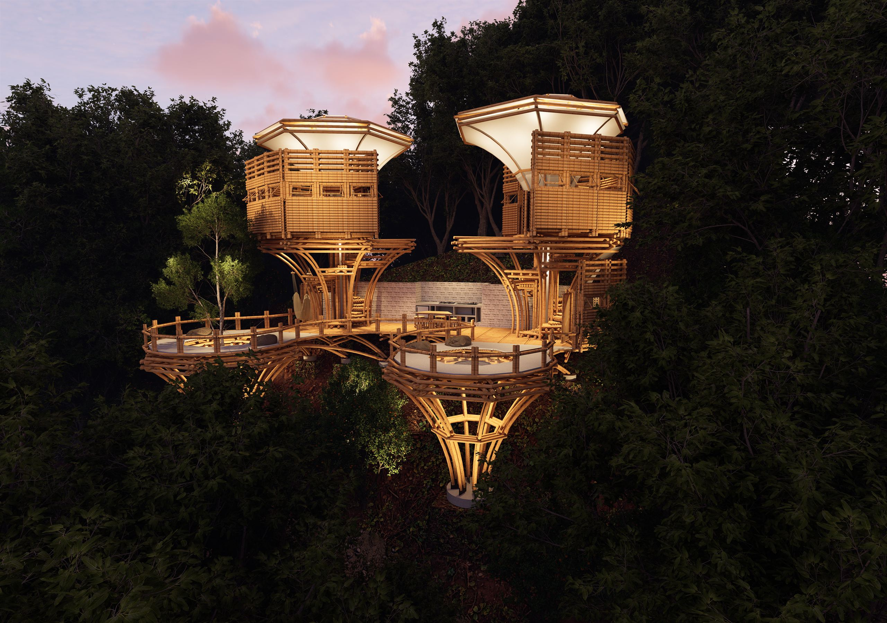
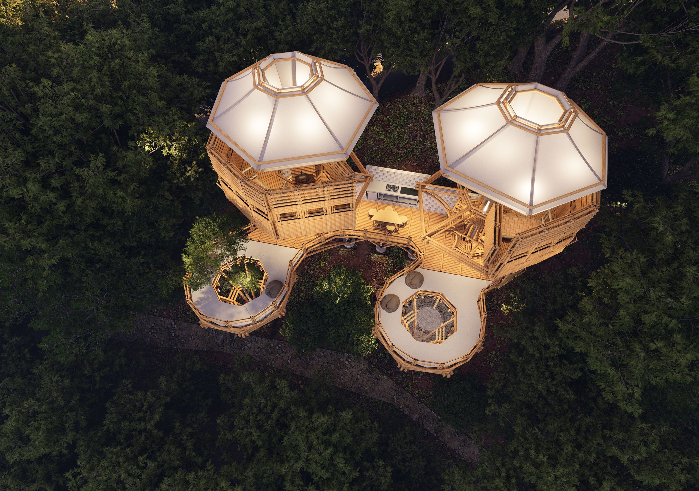
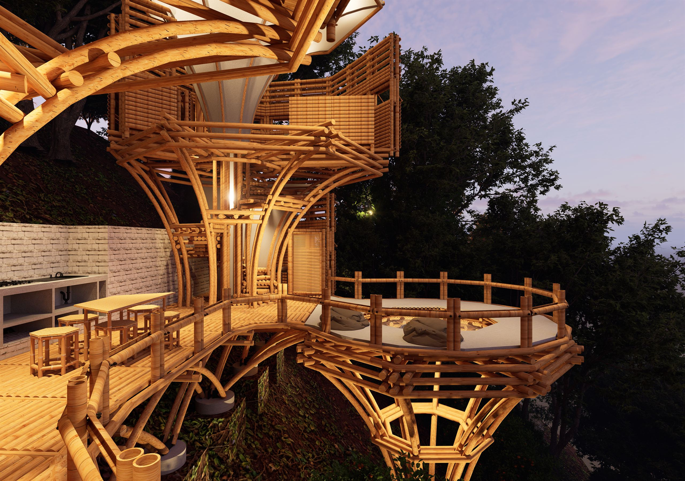
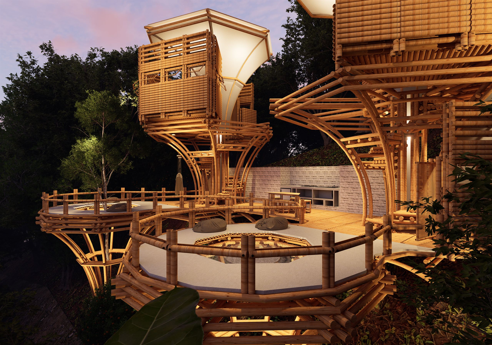
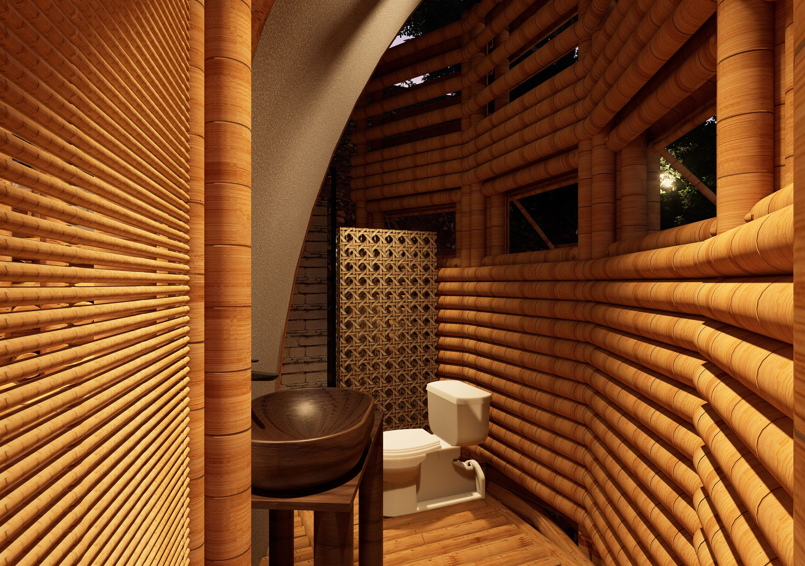
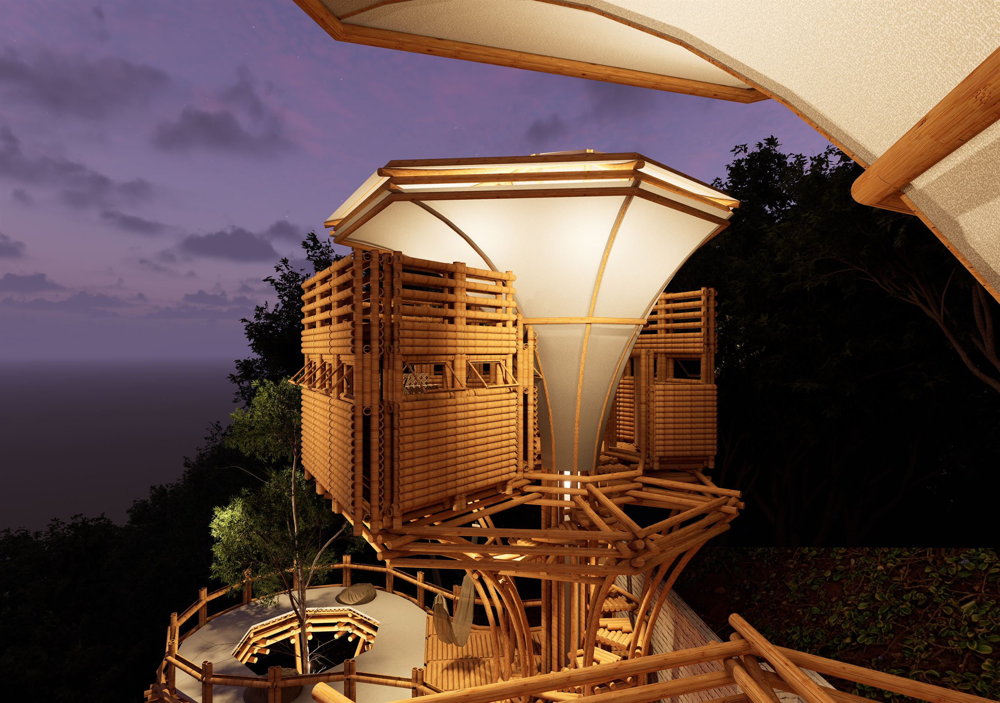
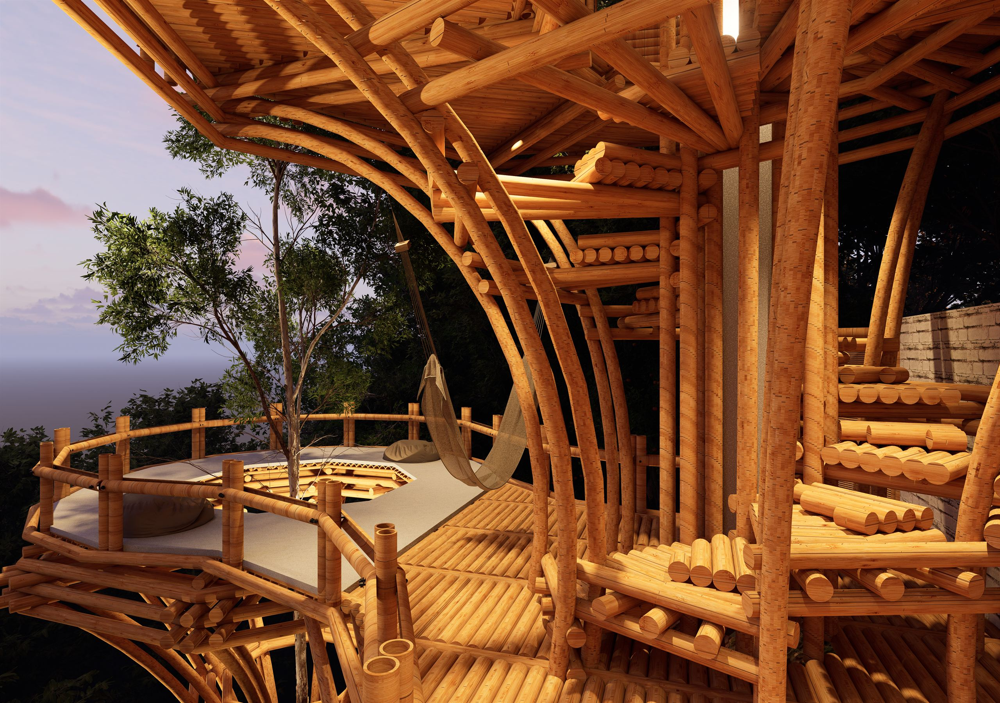
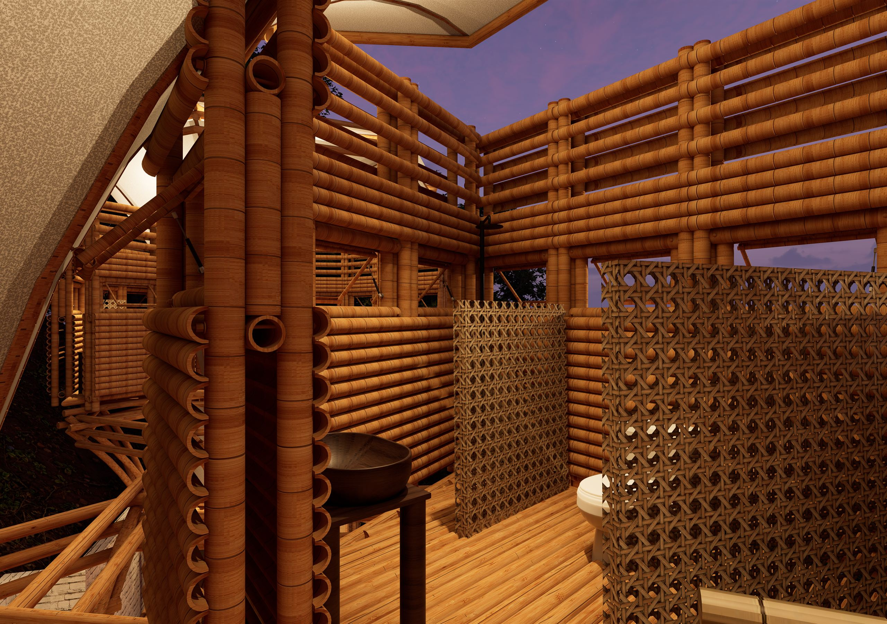

Casa de Guardaparques · Taller de Diseño VI
Bajo el Palio del Ávila
Una estructura habitable de bambú · Sabas Nieves, El Ávila
No busca
dominar el
paisaje.
Aprende a
desaparecer en
él.

El Umbral
de la Montaña
Subir Sabas Nieves es un ritual de esfuerzo, verde y neblina. Donde la naturaleza se vuelve más imponente, emerge una silueta ligera: un refugio permeable, libre y suspendido, inspirado en la lógica de un paraguas. Una estructura que respira con la montaña y ofrece cobijo tanto al guardaparque que la custodia como al excursionista que la transita.


Adaptación a las cotas · Sabas NievesHabitar
la Pendiente
El terreno no se altera; se acompaña.
La arquitectura resuelve la topografía del Ávila escalonándose en concordancia con las cotas del paisaje. Esta estrategia fragmenta el programa en dos realidades complementarias.
Una zona baja y abierta que abraza el flujo de la ruta.
Un área elevada que se repliega en busca de intimidad.


Planta baja · Punto de encuentroEl Encuentro
y el Refugio
Público
Los límites entre el adentro y el afuera se disuelven.
Al nivel del camino, la planta baja se convierte en un punto de encuentro donde el guardaparque recibe a la comunidad y a los caminantes. Una cocina equipada, el baño público y las áreas de recreación se abren directamente al sotobosque, permitiendo que la brisa y la luz filtrada del Ávila inunden cada rincón.


La Intimidad
Elevada
Elevadas entre las copas de los árboles, las habitaciones se convierten en miradores íntimos. Es el descanso bajo la cubierta protectora, donde el sonido de la montaña sustituye al de la ciudad.
La Honestidad
del Bambú
Una técnica constructiva honesta y local. Un sistema de superposición rítmica: un elemento descansa sobre el otro, sumando capas que ganan rigidez y configuran el esqueleto del paraguas. →

La arquitectura sostenible puede ser, al mismo tiempo, estructuralmente rigurosa, ligera y profundamente ligada a su territorio.
Una estructura que respira con la montaña.
Bajo el Palio del Ávila
Casa de Guardaparques · Taller de Diseño VI
Universidad Católica Andrés Bello · Sección ???
???